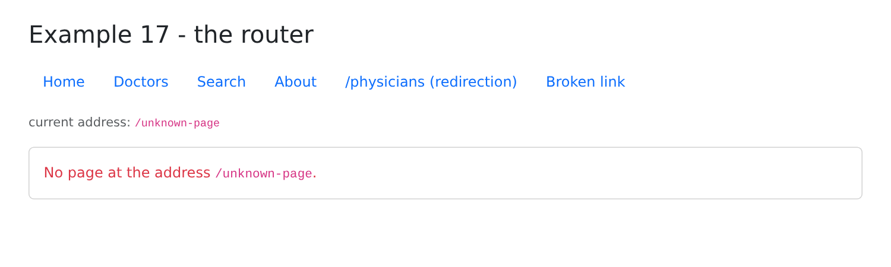
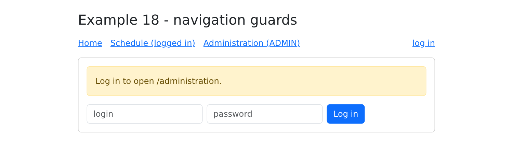

4. 路由
4.1. 示例 17：路由器
[Angular]应用程序是一个单页应用：浏览器只加载一个 HTML 页面。然而，[RdvMedecins]应用程序有多个页面（/login、/schedule、/doctors……），每个页面都有自己的 URL，可以加入书签或重新加载。这正是[Angular] 路由器的作用：它将每个 URL 与一个组件（即“页面”）关联起来，并在 URL 变化时显示该组件，而无需向服务器发出任何请求。
| 17-router/src/
├── app/
│ ├── pages/
│ │ ├── home.ts
│ │ ├── doctor-list.ts
│ │ ├── doctor-detail.ts
│ │ ├── search.ts
│ │ ├── about.ts
│ │ └── not-found-page.ts
│ ├── data.ts 三位“硬编码”的医生
│ ├── app.routes.ts 路由
│ ├── app.config.ts 应用程序的配置
│ ├── app.ts
│ └── app.html
├── index.html
└── main.ts
|
4.1.1. 路由配置
| // =========================================================================
// 17-router/src/app/app.routes.ts - 应用的路由
// -------------------------------------------------------------------------
// Angular 应用是单页应用（SPA：Single
// Page Application）：浏览器只加载一个 HTML 页面。点击
// 内部链接时，不会向服务器发送请求：
// 路由器会修改浏览器显示的地址，
// 并替换 <router-outlet> 中显示的组件。
//
// 路由将一个路径（PATH）与一个组件（COMPONENT，即一个“页面”）关联：
// 'doctors/:id' :id 是参数（/doctors/2 -> id = "2"）；
// '**' 任意路径：“未找到”页面。
// 路由按顺序匹配：它必须放在最后。
// title：显示该页面时浏览器标签页的标题。
// =========================================================================
import { Routes } from '@angular/router';
import { Home } from './pages/home';
import { DoctorList } from './pages/doctor-list';
import { DoctorDetail } from './pages/doctor-detail';
import { Search } from './pages/search';
import { NotFoundPage } from './pages/not-found-page';
export const routes: Routes = [
{ path: '', component: Home, title: 'Home' },
{ path: 'doctors', component: DoctorList, title: 'Doctors' },
{ path: 'doctors/:id', component: DoctorDetail, title: 'A doctor' },
{ path: 'search', component: Search, title: 'Search' },
// 懒加载：此页面的代码只在
// 首次访问时下载（编译器会将其生成单独的文件）
{ path: 'about', loadComponent: () => import('./pages/about'), title: 'About' },
// 重定向：旧地址指向新地址
{ path: 'physicians', redirectTo: 'doctors' },
{ path: '**', component: NotFoundPage, title: 'Page not found' },
];
|
- 第 24 行：路由构成一个类型为[Routes]的对象数组；
- 第 25 行：空路径：主页，地址为 /。路径开头永远不要放置 /；
- 第 27 行：[:id] 是一个参数：/doctors/1、/doctors/2……都显示[DoctorDetail]组件，该组件接收[id]的值；
- 第 31 行：[loadComponent] 取代[component]：组件仅在首次访问该页面时才加载。编译器将其代码存放在单独的文件中，该文件在此时才下载；这加快了应用程序的加载速度。在案例研究中，我们将对所有页面这样做；
- 第 33 行：一个重定向：/physicians 指向 /doctors；
- 第 34 行：[**]：任意路径。由于路径按顺序依次尝试，只有在其他路径都不匹配时才会使用这一条：这就是“页面未找到”页面；
- [title]：显示该页面时的浏览器标签页标题。
4.1.2. 应用程序配置
| // =========================================================================
// 17-router/src/app/app.config.ts
// -------------------------------------------------------------------------
// provideRouter(routes)：将路由器及其路由（app.routes.ts）
// 添加到应用中。withComponentInputBinding()：地址中的参数（/doctors/:id、?q=...）
// 会作为输入属性（input()）
// 传递给页面组件——参见 pages/doctor-detail.ts。
// =========================================================================
import { ApplicationConfig } from '@angular/core';
import { provideRouter, withComponentInputBinding } from '@angular/router';
import { routes } from './app.routes';
export const appConfig: ApplicationConfig = {
providers: [provideRouter(routes, withComponentInputBinding())],
};
|
到目前为止，应用程序配置都放在文件[main.ts]中。现在它被单独存放在[app.config.ts]中，就像由命令[ng new]创建的项目那样：
- 第 15 行：[provideRouter] 将路由器及其路由添加到应用程序中。[withComponentInputBinding()] 将地址参数作为输入传递给页面组件（[input()]，示例 10）：这是读取它们的最简单方式。
| // =========================================================================
// 17-router/src/main.ts
// -------------------------------------------------------------------------
// 应用的配置（其 "providers"）单独存放在
// app.config.ts 中：这是 Angular 项目的常见布局。
// =========================================================================
import { bootstrapApplication } from '@angular/platform-browser';
import { appConfig } from './app/app.config';
import { App } from './app/app';
bootstrapApplication(App, appConfig).catch((error) => console.error(error));
|
- 第 12 行：[bootstrapApplication] 接收该配置。
| <!doctype html>
<html lang="en">
<head>
<meta charset="utf-8">
<title>Example 17 - the router</title>
<base href="/">
<meta name="viewport" content="width=device-width, initial-scale=1">
</head>
<body>
<app-root></app-root>
</body>
</html>
|
- 第 6 行：[<base href="/">]：路由器据以计算路径的地址。没有它，多级地址（/doctors/2）将无法工作。
4.1.3. 应用程序外壳
根组件成为一个外壳：它包含所有页面共有的元素（此处为标题和链接），以及一个用于显示当前页面的区域。
| // =========================================================================
// 17-router/src/app/app.ts - 应用的“外壳”
// -------------------------------------------------------------------------
// - routerLink="..."：内部链接。用在 <a> 标签上时，它会生成
// 真正的 href，但点击时不会重新加载页面：由路由器
// 处理。routerLinkActive="active" 会在当前页面对应的链接上设置 "active" 类
// （Bootstrap 的类）；
// - <router-outlet />：显示
// 当前路由所对应组件的位置。
// =========================================================================
import { Component, inject } from '@angular/core';
import { toSignal } from '@angular/core/rxjs-interop';
import { NavigationEnd, Router, RouterLink, RouterLinkActive, RouterOutlet } from '@angular/router';
import { filter, map } from 'rxjs';
@Component({
selector: 'app-root',
imports: [RouterLink, RouterLinkActive, RouterOutlet],
templateUrl: './app.html',
})
export class App {
private readonly router = inject(Router);
// 当前地址，以信号形式提供：router.events 是导航事件的
// 流（Observable，参见示例 19）；我们保留每次导航的
// 结束事件，再由 toSignal 将其转为信号
protected readonly address = toSignal(
this.router.events.pipe(
filter((e) => e instanceof NavigationEnd),
// decodeURIComponent：%20 会还原为空格
map((e) => decodeURIComponent(e.urlAfterRedirects)),
),
{ initialValue: '' },
);
}
|
- 第 19 行：模板所使用的路由器指令；
- 第 28–35 行：当前 URL，显示在链接下方。[router.events] 是一个可观察对象 （事件流，如示例 19 所示），用于标示导航的每个步骤。我们只保留导航的终点（第 30 行），从中提取地址（包括任何重定向，第 32 行），然后由[toSignal] 将该流转换为可在模板中使用的信号。
| <div class="container py-4">
<h1 class="h3 mb-3">Example 17 - the router</h1>
<nav class="nav nav-pills mb-3">
<!-- routerLinkActiveOptions exact："/" 不能在 /doctors 上处于激活状态 -->
<a class="nav-link" routerLink="/" routerLinkActive="active" [routerLinkActiveOptions]="{ exact: true }">Home</a>
<a class="nav-link" routerLink="/doctors" routerLinkActive="active">Doctors</a>
<!-- [queryParams]：? 之后的参数（/search?q=general practitioner）；
queryParams: 'ignored'：无论搜索内容如何，链接都保持激活状态 -->
<a class="nav-link" routerLink="/search" [queryParams]="{ q: 'general practitioner' }" routerLinkActive="active"
[routerLinkActiveOptions]="{ paths: 'exact', queryParams: 'ignored', fragment: 'ignored', matrixParams: 'ignored' }">Search</a>
<a class="nav-link" routerLink="/about" routerLinkActive="active">About</a>
<a class="nav-link" routerLink="/physicians">/physicians (redirection)</a>
<a class="nav-link" routerLink="/unknown-page">Broken link</a>
</nav>
<p class="small text-muted">current address: <code>{{ address() }}</code></p>
<div class="card p-3">
<router-outlet />
</div>
</div>
|
- 第 5 行：[routerLink]：内部链接。对于[<a>]标签，它会生成有效的[href]属性（链接可以在新标签页中打开），但点击它不会重新加载页面：改变地址和显示内容的是路由器。[routerLinkActive="active"] 会将[active]类（源自[Bootstrap]）应用到当前所显示页面的链接上。如果没有[exact]选项，/ 链接在所有页面上都会处于激活状态，因为所有地址都以 / 开头；
- 第 9–10 行：[[queryParams]]：位于 URL 中[?] 之后的参数（/search?q=general practitioner）。[queryParams: 'ignored']选项使链接无论搜索内容如何都保持激活状态；
- 第 12–13 行：一个指向重定向的链接，以及一个指向不存在地址的链接；
- 第 17 行：[<router-outlet />]：显示当前路由组件的位置。
4.1.4. 页面
| // “硬编码”数据，以便本示例不依赖服务器
export interface Doctor {
id: number;
title: string;
firstName: string;
lastName: string;
specialty: string;
}
export const DOCTORS: Doctor[] = [
{ id: 1, title: 'Mme', firstName: 'Marie', lastName: 'PELISSIER', specialty: 'general practitioner' },
{ id: 2, title: 'Mr', firstName: 'Paul', lastName: 'TATOU', specialty: 'pediatrician' },
{ id: 3, title: 'Melle', firstName: 'Sophie', lastName: 'DUPONT', specialty: 'general practitioner' },
];
|
| import { Component } from '@angular/core';
@Component({
selector: 'app-home',
template: `
<p class="mb-0">Welcome. Click on the links: the address of the browser changes, the page is never
reloaded (open the Network tab of the developer tools to check it). The Back and
Forward buttons of the browser work, as well as reloading (F5) any page.</p>
`,
})
export class Home {}
|
页面就是普通组件，没有任何特别之处。
| // 17-router/src/app/pages/doctor-list.ts - 带参数的链接
import { Component } from '@angular/core';
import { RouterLink } from '@angular/router';
import { DOCTORS } from '../data';
@Component({
selector: 'app-doctor-list',
imports: [RouterLink],
template: `
<ul class="mb-0">
@for (m of doctors; track m.id) {
<!-- [routerLink] 使用数组：路由器会拼接出地址 /doctors/2 -->
<li><a [routerLink]="['/doctors', m.id]">{{ m.title }} {{ m.firstName }} {{ m.lastName }}</a></li>
}
</ul>
`,
})
export class DoctorList {
protected readonly doctors = DOCTORS;
}
|
- 第 13 行：[[routerLink]] 在此接收一个数组：路由器根据数组元素拼装出地址（/doctors/2）。
| // =========================================================================
// 17-router/src/app/pages/doctor-detail.ts - 带参数的页面
// -------------------------------------------------------------------------
// :id 参数会作为输入属性（INPUT）到达（得益于 withComponentInputBinding，
// 参见 app.config.ts），类型为字符串：只需声明一个
// 同名的输入属性即可。这样组件就不再依赖路由器：
// 也可以这样使用它：<app-doctor-detail id="2">。
// Router.navigate(...)：通过代码导航；Location.back()：返回
// 上一页，就像浏览器的“后退”按钮。
// =========================================================================
import { Component, computed, inject, input } from '@angular/core';
import { Location } from '@angular/common';
import { Router } from '@angular/router';
import { DOCTORS } from '../data';
@Component({
selector: 'app-doctor-detail',
template: `
@if (doctor(); as m) {
<h2 class="h5">{{ m.title }} {{ m.firstName }} {{ m.lastName }}</h2>
<p>Specialty: {{ m.specialty }}</p>
<div class="d-flex gap-2">
<button class="btn btn-sm btn-outline-secondary" (click)="back()">Back</button>
<button class="btn btn-sm btn-outline-primary" (click)="next()">Next doctor</button>
</div>
} @else {
<p class="text-danger mb-0">Doctor no. {{ id() }} does not exist.</p>
}
`,
})
export class DoctorDetail {
readonly id = input.required<string>();
private readonly router = inject(Router);
private readonly location = inject(Location);
// computed：从 /doctors/1 跳转到 /doctors/2 时，Angular 复用
// 同一个组件，只改变 id 输入属性——computed 随之更新
protected readonly doctor = computed(() => DOCTORS.find((m) => m.id === Number(this.id())) ?? null);
protected back(): void {
this.location.back();
}
protected next(): void {
const id = (Number(this.id()) % DOCTORS.length) + 1;
this.router.navigate(['/doctors', id]);
}
}
|
- 第 33 行：路由参数[:id] 被传递给同名的输入。与所有来自地址的内容一样，它是一个字符串；
- 第 39 行：所显示的医生由输入计算得出。从 /doctors/1 切换到 /doctors/2 时，[Angular] 不会重新创建组件：它只更改输入的值，而 [computed] 会随之更新；
- 第 27–29 行：对未知标识符（/doctors/9）给出提示；
- 第 42 行：[Location.back()]：返回上一页，就像浏览器的“后退”按钮一样；
- 第 47 行：[Router.navigate]：由代码触发的导航，使用与[[routerLink]]相同的数组。
| // =========================================================================
// 17-router/src/app/pages/search.ts - 由 URL 驱动的页面
// -------------------------------------------------------------------------
// /search?q=pediatrician：与 NestJS 课程中的 GET 表单一样，
// 页面完全由其地址描述：可以加书签、
// 重新加载、后退导航。q 参数同样
// 作为组件的输入属性到达。
// =========================================================================
import { Component, computed, inject, input, linkedSignal } from '@angular/core';
import { FormsModule } from '@angular/forms';
import { Router } from '@angular/router';
import { DOCTORS } from '../data';
@Component({
selector: 'app-search',
imports: [FormsModule],
template: `
<form class="d-flex gap-2 mb-3" (ngSubmit)="search()">
<input name="input" class="form-control" placeholder="name or specialty" [(ngModel)]="input">
<button class="btn btn-primary">Search</button>
</form>
<ul class="mb-0">
@for (m of results(); track m.id) {
<li>{{ m.firstName }} {{ m.lastName }} ({{ m.specialty }})</li>
} @empty {
<li class="text-muted">No result.</li>
}
</ul>
`,
})
export class Search {
readonly q = input<string>(); // ?q=...（不存在时为 undefined）
private readonly router = inject(Router);
// 字段以 URL 的值作为初始值，并在其变化时（后退按钮）跟随更新，
// 同时保持可编辑：这就是 linkedSignal
protected readonly input = linkedSignal(() => this.q() ?? '');
protected readonly results = computed(() => {
const q = (this.q() ?? '').toLowerCase();
return DOCTORS.filter((m) => `${m.firstName} ${m.lastName} ${m.specialty}`.toLowerCase().includes(q));
});
protected search(): void {
// 修改 URL；显示跟随 URL（q 输入属性）
this.router.navigate(['/search'], { queryParams: { q: this.input() } });
}
}
|
该页面完全由其地址描述，就像 GET 表单的页面一样：你可以将它加入书签、重新加载，或使用“后退”按钮返回到它。
- 第 33 行：地址中的参数[q] 也作为输入传递；如果缺失，其值为[undefined]；
- 第 38 行：输入字段是一个[linkedSignal]：它取地址中的值，在地址变化时（使用“后退”按钮）相应更新，但仍可由用户编辑；
- 第 40–43 行：结果取决于地址，而不是输入：它们只在提交表单时才会变化；
- 第 47 行：提交表单会改变地址，地址改变了输入 [q]，输入 [q] 的变化又改变了结果。
| // 17-router/src/app/pages/about.ts - 按需加载的页面
// "export default"：loadComponent: () => import('./pages/about') 无需
// 指明名称即可找到该组件
import { Component } from '@angular/core';
@Component({
selector: 'app-about',
template: `<p class="mb-0">This page was downloaded on the first visit (Network tab: a file
chunk-XXXX.js). Its tab title comes from the route.</p>`,
})
export default class About {}
|
- 第 11 行：[export default]：路由中的[loadComponent]函数（[import('./pages/about')]）无需指定组件名称即可找到该组件。
| import { Component, inject } from '@angular/core';
import { Router } from '@angular/router';
@Component({
selector: 'app-not-found-page',
template: `<p class="text-danger mb-0">No page at the address <code>{{ address }}</code>.</p>`,
})
export class NotFoundPage {
protected readonly address = inject(Router).url;
}
|
- 第 9 行：[Router.url]：所请求的地址。
4.1.5. 执行
[npm start 17-router]；点击“Doctors”，然后点击“Paul”TATOU：

点击“Search”，输入“pediatrician”，然后按 Enter 键：地址随之改变。

失效的链接会导致“页面未找到”错误：

你可以在浏览器开发者工具的 Network 选项卡中验证，点击时不会向服务器请求任何页面，只有首次访问“About”页面时除外（一个名为[chunk-XXXX.js]的文件）。你也可以重新加载任意页面（F5）：开发服务器始终返回[index.html]，由路由器显示与该地址对应的页面。生产服务器必须做到同样的事情：这正是 JSON 服务器在部署时将要做的。
4.2. 示例 18：导航守卫页面
[RdvMedecins]应用程序中的某些页面是受限的：日程需要登录，医生管理需要 ADMIN 角色。在服务器端，[NestJS]课程使用了访问控制（[JwtAuthGuard]、[RolesGuard]）。[Angular]路由器也有自己的机制：在显示路由之前调用的函数，它们可以允许导航，也可以将导航重定向到另一个地址。
本示例在没有服务器的情况下模拟登录：三个账户是硬编码的。
| 18-guards/src/app/
├── pages/
│ ├── home.ts 公共页面
│ ├── login.ts 公共页面
│ ├── schedule.ts 需要登录
│ └── administration.ts 需要 ADMIN 角色
├── session.service.ts 已登录的用户
├── guards.ts 守卫
├── app.routes.ts
├── app.config.ts
├── app.ts
└── app.html
|
4.2.1. 会话
| // =========================================================================
// 18-guards/src/app/session.service.ts - 模拟的会话（无服务器）
// -------------------------------------------------------------------------
// 已登录用户保存在根服务中：所有注入它的组件和
// 所有守卫共享同一个实例。（示例 23 将用真实服务器
// 做同样的事。）
// =========================================================================
import { Injectable, signal } from '@angular/core';
export type Role = 'ADMIN' | 'DOCTOR' | 'USER';
export interface User {
login: string;
role: Role;
}
// 三个“硬编码”账号（密码 = 登录名）
const ACCOUNTS: Record<string, Role> = { admin: 'ADMIN', pelissier: 'DOCTOR', martin: 'USER' };
@Injectable({ providedIn: 'root' })
export class SessionService {
private readonly _user = signal<User | null>(null);
readonly user = this._user.asReadonly();
logIn(login: string, password: string): boolean {
const role = Object.hasOwn(ACCOUNTS, login) ? ACCOUNTS[login] : undefined;
if (role === undefined || password !== login) {
return false;
}
this._user.set({ login, role });
return true;
}
logOut(): void {
this._user.set(null);
}
}
|
- 第 11 行：[RdvMedecins]应用程序的三种角色；
- 第 19 行：三个账户，每个账户的密码都等于用户名；
- 第 23–24 行：已登录的用户（若没有则为[null] ），存放在一个只有服务可以修改的信号中。由于只有一个服务，注入它的组件和守卫看到的都是同一个用户；
- 第 27 行：[Object.hasOwn]：只保留[ACCOUNTS]对象自身的键。如果没有这一预防措施，登录名“constructor”会找到一个从所有[JavaScript]对象继承而来的属性；
- 第 26–33 行：如果账户存在且密码正确，则登录成功。
4.2.2. 守卫
| // =========================================================================
// 18-guards/src/app/guards.ts - 导航守卫
// -------------------------------------------------------------------------
// 守卫（CanActivateFn）是路由器在显示声明了它的路由（canActivate: [...]）之前
// 调用的函数。它返回：
// - true ：导航继续；
// - UrlTree（由 router.createUrlTree 构建的地址）：
// 导航被替换为重定向到该地址。
// 守卫可以注入服务（inject）：它运行在应用的
// 注入上下文中。
//
// 它相当于 NestJS 守卫（JwtAuthGuard、
// RolesGuard）在客户端的对应物——但有一个根本区别：客户端守卫
// 只是一种便利。客户端的代码掌握在用户手中，用户
// 可以随意修改。数据真正的保护仍然
// 由服务器负责（参见关于黑盒的章节）。
// =========================================================================
import { inject } from '@angular/core';
import { CanActivateFn, Router } from '@angular/router';
import { Role, SessionService } from './session.service';
// 该页面要求已登录
export const loginRequired: CanActivateFn = (_route, state) => {
if (inject(SessionService).user() !== null) {
return true;
}
// 未登录：跳转到登录页，并记住原本要去的位置
return inject(Router).createUrlTree(['/login'], { queryParams: { redirect: state.url } });
};
// 该页面要求具有路由数据（data.roles）中列出的某个角色
export const roleRequired: CanActivateFn = (route, state) => {
const roles = route.data['roles'] as Role[];
const user = inject(SessionService).user();
if (user !== null && roles.includes(user.role)) {
return true;
}
// 已登录，但角色不符：返回首页，并附带原因
return inject(Router).createUrlTree(['/'], { queryParams: { denied: state.url } });
};
|
- 第 24 行：守卫是类型为[CanActivateFn]的函数。路由器向它传递要激活的路由和导航状态（其中包含所请求的地址，[state.url]）；
- 第 25 行：守卫可以像组件一样，使用[inject]注入服务；
- 第 26 行：[true]：导航继续；
- 第 29 行：否则，守卫返回另一个地址，由[createUrlTree]生成：导航被替换为重定向到登录页面。参数[redirect] 保留所请求的页面，以便登录后返回；
- 第 34 行：[route.data]：路由声明的自由数据（此处为授权角色）。因此同一个守卫可用于所有受限页面，而不论它们的角色如何；
- 第 40 行：已登录但角色不合适的用户会被重定向到主页，并附带拒绝的原因。
第 12–16 行的注释至关重要：客户端守卫只是为用户提供的一种便利，使其免于打开可能无法正常工作的页面。客户端代码在浏览器中运行；用户可以读取和修改它。数据保护仍然由服务器负责，服务器会在每次请求时验证权限。
4.2.3. 受保护的路由
| // =========================================================================
// 18-guards/src/app/app.routes.ts - 受保护的路由
// -------------------------------------------------------------------------
// - canActivate：需要依次通过的守卫；
// - data ：附加在路由上的自由信息（此处为
// 授权的角色），由守卫读取。
// =========================================================================
import { Routes } from '@angular/router';
import { loginRequired, roleRequired } from './guards';
import { Home } from './pages/home';
import { Login } from './pages/login';
import { Schedule } from './pages/schedule';
export const routes: Routes = [
{ path: '', component: Home },
{ path: 'login', component: Login },
{ path: 'schedule', component: Schedule, canActivate: [loginRequired] },
{
path: 'administration',
// 懒加载：守卫通过之后才下载代码
loadComponent: () => import('./pages/administration'),
canActivate: [loginRequired, roleRequired],
data: { roles: ['ADMIN'] },
},
{ path: '**', redirectTo: '' },
];
|
- 第 18 行：[canActivate]：路由守卫列表；
- 第 22 行：管理页面按需加载：只有在守卫授权后才会下载其代码；
- 第 23 行：两个守卫，按顺序调用：首先，必须已登录；其次，必须具有正确的角色；
- 第 24 行：授权角色，由守卫[roleRequired]读取；
- 第 26 行：任何未知地址都会重定向到主页。
| import { ApplicationConfig } from '@angular/core';
import { provideRouter, withComponentInputBinding } from '@angular/router';
import { routes } from './app.routes';
export const appConfig: ApplicationConfig = {
providers: [provideRouter(routes, withComponentInputBinding())],
};
|
配置与上一个示例相同。
4.2.4. 页面
| // =========================================================================
// 18-guards/src/app/pages/login.ts
// -------------------------------------------------------------------------
// 登录后，用户会被送回其想要
// 打开的页面（由守卫设置的 ?redirect=... 参数），否则送往首页。
// router.navigateByUrl：导航到完整地址（/schedule?x=1）。
// =========================================================================
import { Component, inject, input, signal } from '@angular/core';
import { FormsModule } from '@angular/forms';
import { Router } from '@angular/router';
import { SessionService } from '../session.service';
@Component({
selector: 'app-login',
imports: [FormsModule],
template: `
@if (redirect()) {
<p class="alert alert-warning">Log in to open {{ redirect() }}.</p>
}
<form class="d-flex flex-wrap gap-2" (ngSubmit)="submit()">
<input name="login" class="form-control w-auto" placeholder="login" autocomplete="username" [(ngModel)]="login">
<input name="password" type="password" class="form-control w-auto" placeholder="password"
autocomplete="current-password" [(ngModel)]="password">
<button class="btn btn-primary">Log in</button>
</form>
@if (error()) {
<p class="text-danger mt-2 mb-0">Incorrect login or password.</p>
}
`,
})
export class Login {
readonly redirect = input<string>();
private readonly session = inject(SessionService);
private readonly router = inject(Router);
protected readonly login = signal('');
protected readonly password = signal('');
protected readonly error = signal(false);
protected submit(): void {
this.error.set(!this.session.logIn(this.login().trim(), this.password()));
if (!this.error()) {
const redirect = this.redirect();
// 只接受内部路径：以 / 开头，但不能以 // 开头
// （//site.com/... 指向另一个站点）——不会重定向到其他站点
const internal = redirect !== undefined && redirect.startsWith('/') && !redirect.startsWith('//');
this.router.navigateByUrl(internal ? redirect : '/');
}
}
}
|
- 第 33 行：接收守卫放入地址中的参数[redirect]；
- 第 18–20 行：向用户显示该参数；
- 第 41 行：登录；
- 第 43–47 行：如果成功，用户将被重定向到所请求的页面（[navigateByUrl] 接受包含参数在内的完整 URL）或主页。参数[redirect] 来自 URL：任何人都可以创建指向 /login?redirect=//malicious-site.com 的链接。因此第 46 行只接受属于应用程序内部的路径。
| import { Component, input } from '@angular/core';
@Component({
selector: 'app-home',
template: `
<!-- ?denied=...：角色不符时由 roleRequired 守卫设置 -->
@if (denied()) {
<p class="alert alert-danger">Your role does not allow you to open {{ denied() }}.</p>
}
<p class="mb-0">Public page. Try the two other links, logged in or not (admin, pelissier, martin -
password = login).</p>
`,
})
export class Home {
readonly denied = input<string>();
}
|
- 第 15 行：拒绝的原因，由守卫[roleRequired]提交。
| import { Component, inject } from '@angular/core';
import { SessionService } from '../session.service';
@Component({
selector: 'app-schedule',
template: `<p class="mb-0">The schedule of <strong>{{ session.user()?.login }}</strong>: this page requires being logged in.</p>`,
})
export class Schedule {
protected readonly session = inject(SessionService);
}
|
| import { Component } from '@angular/core';
@Component({
selector: 'app-administration',
template: `<p class="mb-0">Administration: page reserved for the ADMIN role, loaded on demand (Network tab:
its chunk-XXXX.js file is only downloaded on the first visit).</p>`,
})
export default class Administration {}
|
4.2.5. 外壳
| import { Component, inject } from '@angular/core';
import { Router, RouterLink, RouterLinkActive, RouterOutlet } from '@angular/router';
import { SessionService } from './session.service';
@Component({
selector: 'app-root',
imports: [RouterLink, RouterLinkActive, RouterOutlet],
templateUrl: './app.html',
})
export class App {
protected readonly session = inject(SessionService);
private readonly router = inject(Router);
protected onLogOut(): void {
this.session.logOut();
this.router.navigate(['/']);
}
}
|
| <div class="container py-4" style="max-width: 720px">
<h1 class="h3 mb-3">Example 18 - navigation guards</h1>
<nav class="d-flex gap-3 align-items-center mb-3">
<a routerLink="/" routerLinkActive="fw-bold" [routerLinkActiveOptions]="{ exact: true }">Home</a>
<a routerLink="/schedule" routerLinkActive="fw-bold">Schedule (logged in)</a>
<a routerLink="/administration" routerLinkActive="fw-bold">Administration (ADMIN)</a>
<span class="ms-auto">
@if (session.user(); as u) {
{{ u.login }} <span class="badge text-bg-primary">{{ u.role }}</span>
<button class="btn btn-sm btn-link" (click)="onLogOut()">log out</button>
} @else {
<a routerLink="/login">log in</a>
}
</span>
</nav>
<div class="card p-3"><router-outlet /></div>
</div>
|
- 第 8–13 行：已登录的用户及其角色，或指向登录页面的链接；
- 第 10 行：注销会使用户返回主页（app.ts，第 14–17 行）。
4.2.6. 执行
[npm start 18-guards]；在未登录的情况下，点击 Administration：守卫[loginRequired] 会重定向到登录页面，同时保留所请求的页面。

以拥有 USER 角色的 martin 身份登录：登录后，你会被重定向到 /administration；这一次，守卫[roleRequired] 拒绝了导航。

以 admin 身份登录时，同一链接会打开管理页面。